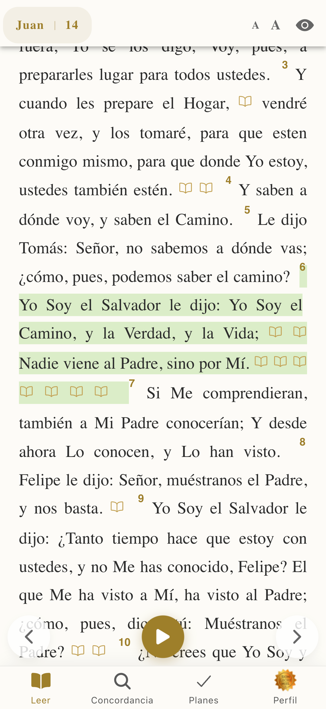

De la Confusión de Babilonia a la Claridad de Sion
No es solo una traducción, es la Versión de Dios contada a la humanidad. Hemos eliminado 2,000 años de contaminación cultural grecorromana para que te encuentres cara a cara con Yo Soy.

¿Adoras al Dios de la Biblia o a una tradición?
Durante siglos, las traducciones han estado influenciadas por imperios religiosos. En el Primer Pacto lo llaman Jehová, y en el Segundo le cambian el nombre al Dios hebreo por Jesús. Sion: Leche y Miel unifica la identidad del Padre y del Hijo.
La Confusión (Babilonia)
- Uso de títulos genéricos ("Señor", "Baal").
- Conceptos filosóficos griegos ajenos al hebreo.
- División artificial entre el "Dios del AT" y el "Dios del NT".
- Lenguaje religioso arcaico que oculta el mensaje.
La Restauración (Sion)
- Restauración del Nombre: Yo Soy (YaH).
- Mentalidad Hebrea: Práctica y relacional.
- Unidad Perfecta: El Padre y el Hijo comparten identidad.
- Español actual, directo y comprensible.
El Rescate del Nombre Sagrado
Moisés preguntó: "¿Cuál es tu Nombre?". Dios respondió: YO SOY EL QUE SOY (YHWH). Esta versión elimina la desconexión histórica.
"Y habrá allí una calzada y un camino, y será llamado Camino de Santidad... El que ande en este Camino, por muy torpe que sea, no se extraviará." (Isaías 35:8)
Herramientas para el Súbdito del Reino
Diseñada para estudiar, no solo para leer.
Fidelidad Contextual
Basada en la revisión de 24 versiones bíblicas, corrigiendo detalles de traducción que confunden a la grey.
Hebreo Simplificado
Mantiene la esencia hebrea sin complicar la lectura. No necesitas saber hebreo para conocer al Dios de los hebreos.
Búsqueda de Verdad
Concordancia rápida para encontrar respuestas a las interrogantes de la vida: ¿Quiénes somos? ¿Qué hacemos aquí?
Siempre Contigo
Lleva la "Carta de Reconciliación" en tu bolsillo. Modo oscuro, notas y sincronización en la nube.